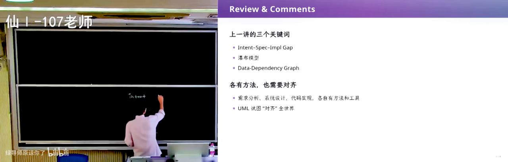
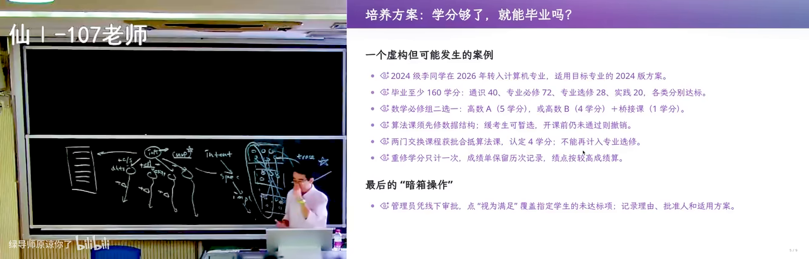
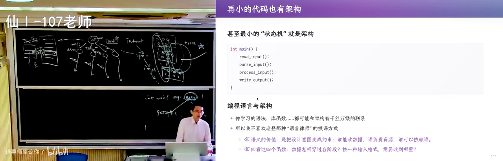

原视频：Bilibili · BV1Rch76WEfQ（时长约 97 分钟） 课程：南京大学《生成式软件工程》（2026）第 06 讲 · Raw 版 整理说明：本书由视频语音转录后经 AI 重构而成；口语已转为书面语；关键时间点标注 (参考时间)，截图卡片可跳转视频对应位置。开场约十五分钟音频质量较差，内容以可辨识部分为准。
读前提：架构（architecture：把系统复杂性分解、隔离的结构设计）是本讲后半主线；正文会给出机制、例子与限制。
1. 引言：Intent、Spec 与会回流的错误
(参考时间: 00:00)
上一讲从软件危机讲到软件工程的诞生。本讲进入两件更「日常」却更难的事：需求 与 架构。这里先建立全课两把钥匙：
- 数据依赖（制品之间直接或间接的依赖关系，决定错误会传播到哪里）：需求、设计、代码、测试并不是孤立文件；
- 可追踪性（需求、设计、代码与测试之间可交叉核对的对应关系）：改动时能否说清「影响了谁」。
经典文献（Royce 等人）勾勒的路径，到今天仍然是许多团队的默认想象：
graph LR
A["Intent 意图"] --> B["Spec 规格"]
B --> C["Implementation 实现"]
C --> D["可运行系统"]
我们希望：先有 intent，再走向 spec，最后走向 implementation，最终产出软件。但真实工程里，这三段并不是单行道，而是布满 制品之间的数据依赖（artifacts 之间直接或间接的依赖关系，决定错误会传播到哪里）。

Intent → Spec → Implementation 与依赖网络在 B 站打开 (00:00:40)
1.1 错误会沿着依赖网络回溯
关键机制是：
- 每个阶段都会产出「制品」：需求文档、设计说明、接口、代码、测试；
- 制品之间互相引用——测试对应设计，设计对应需求；
- 后期才暴露的错误，往往会一路回推到前序的需求或设计；
- 一旦上游要改，下游大面积受污染，重做成本急剧上升。
也就是说：写代码写到一半发现「需求理解错了」，不是改几行字的事，而是整条 数据依赖 链上的规格、接口、用例都要跟着动。这正是软件工程强调「把 intent–spec 做对」的原因——早期便宜的决策，在依赖网络里会被放大。
依赖网络：错误回溯成本在 B 站打开 (00:08:00)
开场后半段音频翻车（官方章节标注「后半音频翻车」），以下以中后段完整录音为准。
2. 需求工程：把说不清的事说清楚
(参考时间: 00:15:03)
2.1 可追踪性：需求说明书的骨干
需求工程（Requirements Engineering：把客户想要什么调研清楚，并写成可实现、可验收的文档）的核心不是「写一份漂亮文档」，而是建立 可追踪性（traceability：需求、设计、代码与测试之间可交叉核对的对应关系）。
理想情况下：
- 每个测试用例都能追溯到某条设计决策；
- 每个代码片段都能说出「为什么存在」；
- 要改需求时，能查清「会影响到谁」。
课堂强调：需求说明书应使用带语义的编号 ID 来建立追踪链，而不是靠自然语言长句。例如：
REQ-17 本科生准出：必须满足 A 或 (B 且 C)
DES-4.2 规则引擎如何求值 REQ-17
TC-11 拆课前旧路径仍可通过的验收
人脑很难对齐一长段散文；编号 + 短句 + 交叉引用，才能让「改动影响面」变成可计算的问题。
结构化需求与追踪链在 B 站打开 (00:22:00)
2.2 软件「不软」：细微差错也会致命
主讲人反复用一个反差：物理世界里的「软材料」可以弹回；软件是纯粹逻辑制品，容不下细微差错——少一个分支、差一个条件，行为就完全走偏。
- 程序每一步在语言定义下都有确定含义（形式语义：操作在规范下的精确含义）；
- 因此「差一点点」在软件里往往等于「全错」；
- 极端环境下，宇宙射线可能造成 bit 翻转；数据中心也会出现 silent error（结果错误却不报错）——运行环境无法被完全预见，所以验证与兜底必须做在软件里。
这与刷题不同：竞赛题假设题目是对的；真实软件面对的是不可完全预见的世界。
2.3 教务系统：需求为什么会爆炸
贯穿全课的范例是教务系统。它不是「一个选课表」，而是长期演进的业务系统：
- 选课、调课、准出、替代课、转专业、慕课班次……不断叠加；
- 后加功能（例如在线课程）会拉出一整条新规则；
- 可称为史诗级需求爆炸。
需求工作的本质，是无尽地与客户沟通，把「想要什么」想到界面控件级别：哪个按钮、什么文案、失败时提示什么。AI 可以协助从真实系统里探索、生成含调研方法、证据边界、用例与术语文档的需求说明书草稿，但「什么算满足」仍要人拍板。
2.4 案例：拆开一门离散数学
把「离散数学」拆成上、下两门课后，毕业准出规则立刻出现裂缝：
- 旧规则：修完一门即可；
- 新事实：课拆成两门；
- 衔接问题：新旧学期学生如何认定；
- 系统里要增加逻辑：「选修了旧课 或（新课上 且 新课下）」等。
这说明：需求变更不是改一句文案，而是业务规则、历史数据、认定逻辑一起动；这就是技术债（早期决定带来的后续维护负担，像债务一样累积利息）最直观的形态。

课程拆分与准出规则裂缝在 B 站打开 (00:36:20)
2.5 技术债与「没有银弹」
- 每一次 MVP（最小可行产品：优先实现最重要功能、可走完流程的切片）、每一次「先这样吧」的需求决定，都会背上技术债；
- 决定一旦进入上下文，后续所有需求都带着历史；
- 需求永远不可能一次说清，也不是一成不变的；
- 软件上线后与物理世界交火，早期决策的维护成本会持续变糟——没有银弹。
AI 时代并没有取消技术债，只是把「写代码」变便宜了；边界划清 + validation（验证） 才决定能不能信任 agent 铺开实现。因此需求、产品设计、架构这三段会成为撬动软件生产力的真正杠杆。
与之配套的工程习惯是 MVP（最小可行产品：优先实现最重要功能、可走完流程的切片）：先验证边界与规则是否站得住，再铺开实现，而不是一次性生成「看起来很全」的系统。
3. 无处不在的架构
(参考时间: 00:44:28)
3.1 架构不是玄学：控制复杂性
谈到架构师，容易想到大框图、数据库、流式管道、应用框架。主讲人给出更朴素的定义：
架构（architecture）是把系统复杂性分解、隔离的结构设计，不等于框架堆叠。
机制：复杂性不会消失，只会被搬到某一层；切分后多数变更只落在边界清晰的单元内，认知负担与协作成本才可控。
例子：把「选课」与「准出规则」拆开后，改学分计算不必碰登录 UI；若共用同一坨脚本，改一行规则可能牵动报表与接口。
限制：切得过碎会带来调用与一致性成本；架构是变更成本与协作成本的平衡，不是模块越多越好。
解决需求膨胀与变化的钥匙是架构。哪怕最小的代码也有架构：变量放哪、函数边界在哪、哪些概念被分开。若未仔细分开概念就全部堆进一个数据库，极容易进入维护泥潭。

架构：切分与解耦在 B 站打开 (00:50:00)
3.2 架构是品位：汉诺塔的四条路
同一问题——非递归汉诺塔——可以映射出不同架构理解：
- 数学闭式：用公式直接算步数与轨迹；
- 栈模拟：用显式栈「编译」递归；
- 状态机解释：把三根柱子上的盘子布局看作状态，移动是迁移；
- 有瑕疵的实现：能跑通大部分输入，却在边界上语义不清。
把程序看作状态机（state machine：系统在有限状态间按规则迁移）、理解操作语义与小步语义后，甚至可以较机械地翻译出非递归实现。架构能力来自跳出问题看问题与第一性原理，而不是背框架名词。
3.3 中间语言：二维码 + Excel 案例
需求看起来再明确，坑仍很多。例如「在 Excel 里批量生成二维码」：
- Excel 版本演进、插件差异；
- 硬编码单元格地址；
- 宿主表达力不足，难验证。
一种架构应对是引入 中间语言（夹在源与目标之间的表示，便于验证、优化和多后端输出）：
业务表达式 → 表达式树（中间语言）
├─ 译到 Python：做正确性验证
└─ 译到 Excel：做交付
一份中介语言、两种执行方式；需求变化时改算子翻译规则，而不是重写全部。
中间语言：表达式树与双后端在 B 站打开 (01:05:00)
3.4 十行与两千行
有时真正的架构体现在：用很少的结构表达很多行为；有时是把复杂性关进某一层，外面仍简单。getopt 这类十行量级的代码里，也有可复用的架构模式（POSIX 里解析 argv 的经典接口）。表达力与复杂性管理是架构的两端。
4. 状态、当前快照与事件历史
(参考时间: 01:12:32)
本节对比 CRUD（增删改查：只维护当前状态快照）与 event sourcing（只追加历史事件、需要时回放或投影出当前状态），并展开机制、例子与限制。
4.1 软件是物理世界的投影
物理世界有过程、有状态；软件往往是这些过程在信息世界的投影。因此许多业务系统天然适合建成状态迁移系统。
世界状态与信息投影在 B 站打开 (01:15:00)
4.2 CRUD 的黑洞：丢了历史
定义：CRUD（增删改查：只维护当前状态快照）只保留「现在是什么」。
机制：每次 Update 直接覆盖字段，旧值被丢弃，计算依赖（为何从 2 学分变成 3 学分）也不入库，只能靠外部日志或人脑。物理世界已经发生、但未被建模的事实会积累成无法解释的数据黑洞（例如：这门课的学分为什么算成 3？谁改的？依据哪版规则？）。
例子：教务若只存「当前是否已准出」，拆课前后规则版本一旦丢失，就无法向学生解释争议结论。
限制：CRUD 实现简单、查询快，适合无需审计的短生命周期状态；一旦要追责、回放、合规就不够用。
4.3 从历史事件生成状态
另一种替代架构是 event sourcing（只追加历史事件、需要时回放或投影出当前状态）：
- 持久化事件，而不是只存最终状态；
- 状态、操作、增量三种视图可以等价，都能回放出现状；
- 事实尽量不可篡改；出错可回退到快照再修逻辑；
- 性能可用快照缓存等技巧缓解；
- 在「屎山」上改造很困难，从一开始就按事件模型设计往往更省事。
graph LR
E["事件流 追加"] --> P["投影 / 回放"]
P --> S["当前状态"]
P --> V["报表视图"]
P --> D["审计视图"]
4.4 回到教务系统
把需求与架构合在一起看教务系统：
- 选课、准出、替代、拆课——全是会变的规则；
- 规则应落在可表达、可替换的一层；
- 若历史只留在 CRUD 当前表里，规则变更后旧账对不上；
- 若保留事件与规则版本，才能解释「当年为何通过」。
这也是需求变更「裂缝」会传到系统各处的原因：改的不是一句提示语，而是认定逻辑与历史解释。
5. 小结：为什么需求和架构是杠杆
(参考时间: 课程末段)
AI 生成「目标明确的代码」已经很便宜。真正稀缺的是：
- 边界划清（需求说到可验证）；
- 验证与追踪（spec ↔ 实现 ↔ 测试）；
- 架构上为变化留缝（规则层、中间语言、事件历史）。
所以：需求、产品设计、架构才是生产力杠杆。写代码可以交给 agent；「做什么、为何做、如何在十年后仍改得动」仍要人负责。
附录：概念补给
数据依赖
- 是什么：制品（需求/设计/代码/测试）之间直接或间接的依赖关系。
- 课上为何出现：解释「后期错误为何会回溯污染上游」。
- 和什么像：多米诺骨牌：动一张牌，倒一串。
可追踪性（Traceability）
- 是什么：需求、设计、代码、测试能交叉核对的对应关系。
- 课上为何出现：需求说明书的骨干；编号 ID 比长句更可追踪。
- 和什么像：论文引用链：这一句依据哪一篇。
形式语义
- 是什么：语言里每一步操作都有确定、精确的含义。
- 课上为何出现：解释软件为何对细微差错零容忍。
- 和什么像：数学定义：差一个符号，命题就不同。
技术债
- 是什么：早期决定带来的后续维护负担，会「生利息」。
- 课上为何出现：需求永远说不清且会变；拆课案例的裂缝。
- 和什么像：信用卡最低还款：今天轻松，总账更痛。
需求工程
- 是什么：调研客户所需，写成可实现、可验收文档的工程活动。
- 课上为何出现：本讲主干；教务系统需求爆炸的应对。
- 和什么像：装修前把插座位置写进合同。
架构
- 是什么：分解、隔离复杂性的结构设计。
- 课上为何出现：应对需求膨胀与变化的钥匙。
- 和什么像：承重墙与管线，不是墙纸。
状态机
- 是什么：系统在有限状态之间按规则迁移。
- 课上为何出现：汉诺塔多解；形式语义的直观模型。
- 和什么像：红绿灯：只有几档状态，按规则切换。
中间语言
- 是什么：夹在源与目标之间的表示，便于验证与多后端输出。
- 课上为何出现：Excel 二维码：一树译到 Python 验证、译到 Excel 交付。
- 和什么像：乐高说明书：一套零件图，可拼不同套装。
CRUD
- 是什么：增删改查，只维护当前状态快照。
- 课上为何出现：丢历史、丢因果，形成数据黑洞。
- 和什么像：只留「余额」不留「流水」。
Event Sourcing
- 是什么：只追加历史事件，用回放/投影得到状态。
- 课上为何出现：可解释、可回退的教务类系统。
- 和什么像：银行流水 + 按规则结账出余额。
MVP
- 是什么：最小可行产品，先验证最重要路径。
- 课上为何出现：AI 时代边界与验证决定信任。
- 和什么像：先做能走通的一条街，再扩成城区。
验证（Validation）
- 是什么：确认做出来的东西符合真实意图与约束。
- 课上为何出现：没有它，agent 产出不可信任。
- 和什么像：装修验收：不是「墙砌完了」，而是「尺寸对、水管不漏」。
书架 Shelf 流水线生成 · 内容衍生自 B 站公开课程视频 BV1Rch76WEfQ
6. 补充：需求变更裂缝如何传到系统各处
需求变更（业务规则或流程被修改）会在系统里留下裂缝：旧数据按旧规则产生，新数据按新规则产生，而中间状态没有历史可查。教务拆课就是这样：一部分学生按旧培养方案，一部分按新方案，认定逻辑一旦写在散落的 if 里，改一处漏十处。
裂缝传递的典型路径是：
- 需求文案改了，但规则实现未改；
- 规则改了，但历史数据未迁移；
- 测试仍断言旧行为，导致「红了就改断言」；
- 文档停在旧版本，新人按错误假设继续开发。
因此需求变更管理要同时覆盖：规则表达、历史数据、验收测试、文档。这正是可追踪性在变更场景下的意义——不是为了应付检查，而是为了回答「这次改动会不会砸到毕业认定」。
同理心（站在用户与教务老师角度理解任务）与领域知识（学分、培养方案、学期制度等专门知识）是学生做不好需求的常见原因：你若从未在窗口前处理过「插班生如何认定已修课程」，就很难写出可用的规则。需求说明书工程的目标，是把这些领域经验变成可审阅的文本，而不是留在口头传统里。
7. 补充：getopt——十行代码里的架构
POSIX 里的 getopt（解析 argv 的经典小接口）是「最小代码也有架构」的样例：输入是 argc/argv，输出是选项与剩余参数；调用方无需理解内部如何扫描字符串。状态机式的解析、清晰的边界、可测试的输入输出——架构思维在十行量级就已经出现。
这与「大框图才是架构」的误解形成对照：先把概念分开，再让它们通过窄接口协作，哪怕规模很小，也已经是在控制复杂性。
8. 补充：三种等价视图与持久结构
在事件模型里，常可以同时维护三种等价视图：
- 事件日志：只追加的事实；
- 当前状态：由事件投影出的「余额」；
- 增量/差异：用于同步或报表。
持久化数据结构（persistent data structure：更新时保留历史版本的结构）让回放与审计成为可能。若只存 CRUD 当前表，形式语义（程序每一步在语言定义下的确定含义）虽然仍成立，但「系统为何变成这样」的语义已经丢失——这就是黑洞式不一致的根源。
9. 补充：边界、验证与信任
AI 生成目标明确的代码已经很便宜，但信任来自边界与验证：需求里写清输入域、失败路径与不变量；实现后用测试与人工抽查证明这些边界成立。若边界模糊，agent 只会把模糊放大成大量看似合理的代码，形成新的维护泥潭。
实践上可以把「验证清单」写进需求：哪些条件必须恒成立、哪些操作可回滚、哪些历史必须可解释。这样架构上的选择（CRUD vs 事件、是否有中间语言）才有判断标准——不是追新，而是看能否支撑这些验证与变更。
教务系统再次成为试金石：若准出规则可被引用编号、可被测试用例覆盖、可被历史事件解释，那么十年后改规则仍可预期；否则每一次「教务通知」都会变成通宵改库。